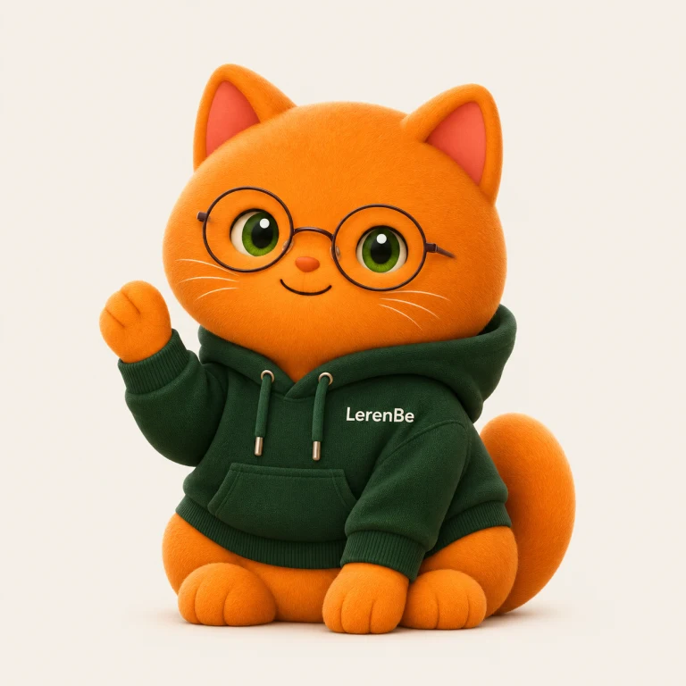
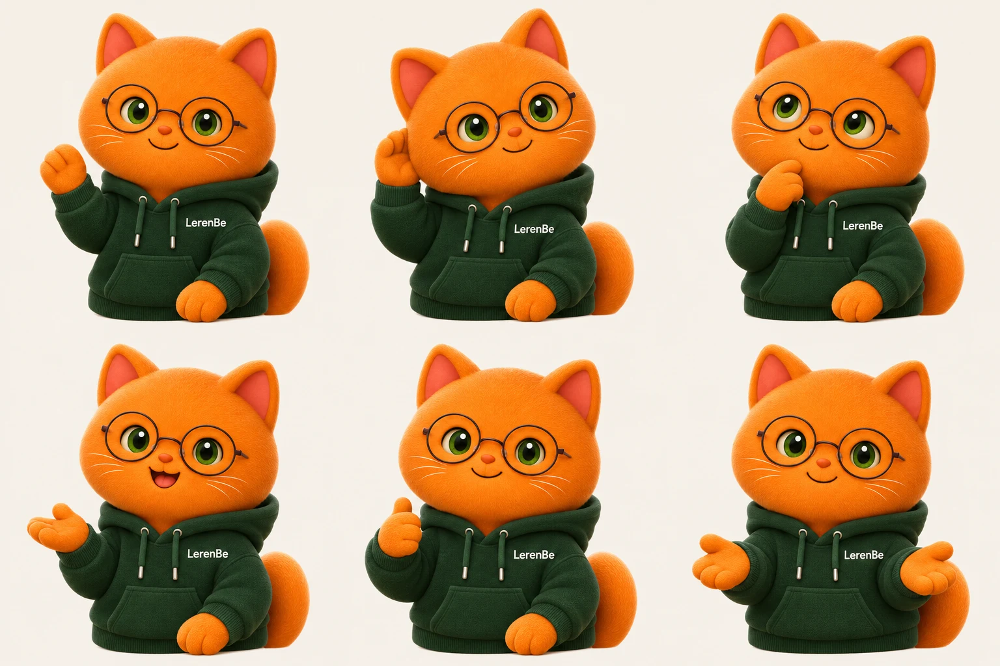

GAMIFIED BELGIUM + LEXI
Маленькі розмови.
Більше впевненості.
Світлий Concept B, навігація A та темна тема з характером C. Сім інтерактивних екранів для дорослих, які будують життя в Бельгії.
Відкрити прототип →Mock-дані. Без API, мікрофона, XP, SRS чи збереження повідомлень. Production та app/ не змінювалися.

01 / СІМ ЕКРАНІВ
Один цілісний маршрут.
02 / ЄДИНИЙ AI-ПЕРСОНАЖ
Lexi: уважний, терплячий, поруч.
Затвердженого референсу в репозиторії не знайдено. Нижче — нова пропозиція: рудий кіт, зелені очі, окуляри, темно-зелена кофта LerenBe. Зовнішність і шість емоцій очікують окремого затвердження.

Верхній ряд: Welcome · Listening · Thinking. Нижній: Speaking · Success · Encouragement. Цілісний атлас, не шість затверджених runtime-файлів.
03 / ПОВНИЙ ЧАТ
Вісім станів, зрозумілих без пояснення.
04 / BEFORE → AFTER
Від дизайн-системи до композиції.
Before усіх екранів — актуальна інтеграція release 253. Чат знято з порожнім локальним mock-станом без запиту до AI. Навчальні екрани знято під час реального проходження першого уроку в тестовому браузері.
05 / ПЕРЕВІРКИ ТА МЕЖІ
Дизайн для вибору перед інтеграцією.
320 / 360 / 390 / 430 / 768 / 1024 / 1280 / 1440 px. Світла й темна теми, текст 200%, фокус із клавіатури, reduced motion та цілі 44×44 px.
Звіт, ресурси та наступні рішення →Емуляція Chromium, не фізичний Samsung. LIFE — одна статична сцена-пропозиція; окремі спрайти, lip sync, реальний голос і AI не реалізовані.